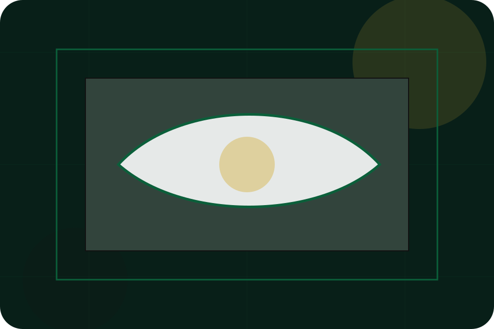
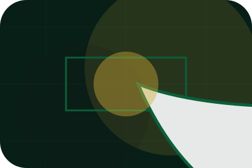
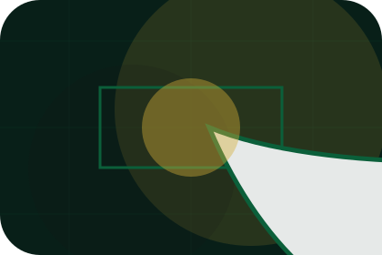
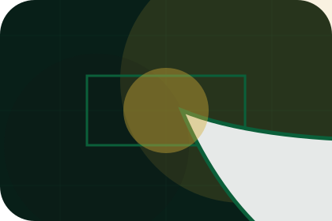
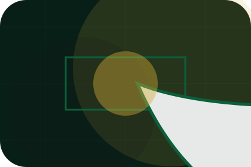
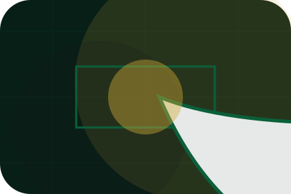
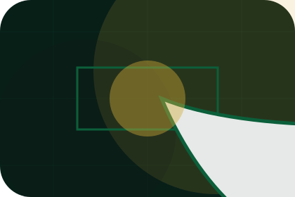
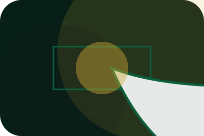
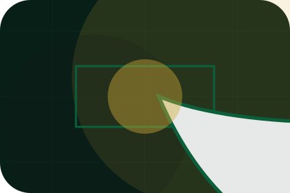
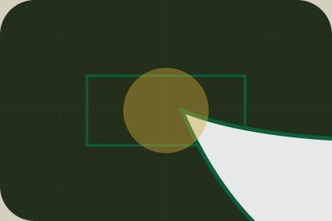

Invitation
Bespoke is framed with restraint, enough detail to feel considered, and a private route forward.
Services / 01
Services opens as a clear luxury decision hub: what Maison offers, who it helps, why it matters, and which route to take first.
The first screen combines positioning, proof, primary action, and fast internal navigation, so people can act immediately or compare the rest of the services route with context.
Deep-green private hero
Select the closest route and Maison keeps the next step, proof, and follow-up expectation aligned with status and discretion.

Services / 02
Bespoke explains the practical scope, best-fit situations, and expected outcome so luxury visitors can compare options without decoding jargon.
The section keeps the offer concrete: what is included, who it is best for, what decision it supports, and which linked route gives the deeper detail.
Explore Services

Bespoke is framed with restraint, enough detail to feel considered, and a private route forward.
Services / 03
Concierge explains the practical scope, best-fit situations, and expected outcome so luxury visitors can compare options without decoding jargon.
The section keeps the offer concrete: what is included, who it is best for, what decision it supports, and which linked route gives the deeper detail.
Explore Services
Concierge is framed with restraint, enough detail to feel considered, and a private route forward.

The proof appears through standards, context, and carefully chosen visual evidence rather than volume.

The next action explains what to send, when to expect a response, and how access is handled.
Services / 04
Advisory explains the practical scope, best-fit situations, and expected outcome so luxury visitors can compare options without decoding jargon.
The section keeps the offer concrete: what is included, who it is best for, what decision it supports, and which linked route gives the deeper detail.
Explore Services
Advisory is framed with restraint, enough detail to feel considered, and a private route forward.
The proof appears through standards, context, and carefully chosen visual evidence rather than volume.

The next action explains what to send, when to expect a response, and how access is handled.
Services / 05
Sourcing explains the practical scope, best-fit situations, and expected outcome so luxury visitors can compare options without decoding jargon.
The section keeps the offer concrete: what is included, who it is best for, what decision it supports, and which linked route gives the deeper detail.
Explore ServicesSourcing is framed with restraint, enough detail to feel considered, and a private route forward.
The proof appears through standards, context, and carefully chosen visual evidence rather than volume.
The next action explains what to send, when to expect a response, and how access is handled.
Services / 06
Access explains the practical scope, best-fit situations, and expected outcome so luxury visitors can compare options without decoding jargon.
The section keeps the offer concrete: what is included, who it is best for, what decision it supports, and which linked route gives the deeper detail.
Explore ServicesAccess is framed with restraint, enough detail to feel considered, and a private route forward.
The proof appears through standards, context, and carefully chosen visual evidence rather than volume.
The next action explains what to send, when to expect a response, and how access is handled.
Services / 07
Inclusions explains the practical scope, best-fit situations, and expected outcome so luxury visitors can compare options without decoding jargon.
The section keeps the offer concrete: what is included, who it is best for, what decision it supports, and which linked route gives the deeper detail.
Explore Services
Inclusions is framed with restraint, enough detail to feel considered, and a private route forward.

The proof appears through standards, context, and carefully chosen visual evidence rather than volume.

The next action explains what to send, when to expect a response, and how access is handled.
Services / 08
Fit explains the practical scope, best-fit situations, and expected outcome so luxury visitors can compare options without decoding jargon.
The section keeps the offer concrete: what is included, who it is best for, what decision it supports, and which linked route gives the deeper detail.
Explore ServicesFit is framed with restraint, enough detail to feel considered, and a private route forward.
The proof appears through standards, context, and carefully chosen visual evidence rather than volume.

The next action explains what to send, when to expect a response, and how access is handled.
Services / 09
Enquire explains the practical scope, best-fit situations, and expected outcome so luxury visitors can compare options without decoding jargon.
The section keeps the offer concrete: what is included, who it is best for, what decision it supports, and which linked route gives the deeper detail.
Request Private AccessEnquire is framed with restraint, enough detail to feel considered, and a private route forward.
The proof appears through standards, context, and carefully chosen visual evidence rather than volume.
The next action explains what to send, when to expect a response, and how access is handled.
Services / 10
Maison closes the services route with a clear action, a quick reminder of the value, and a low-friction way to request private access.
Visitors who are ready can use the primary action. Visitors who are still comparing can scan the section links, proof, and support routes before they request private access.
Request Private AccessThe final block keeps the choice simple: act now, compare one more proof route, or send enough detail for a focused response.
Request Private Accessstatus and discretion
A luxury service site with green-gold maison mood, heritage cards, private access routes, and discreet proof. Services ends with a direct path to request private access, plus enough context for visitors who still need to compare.

Request Private AccessInformation is provided for planning and should be reviewed for the final client, location, and operating rules.